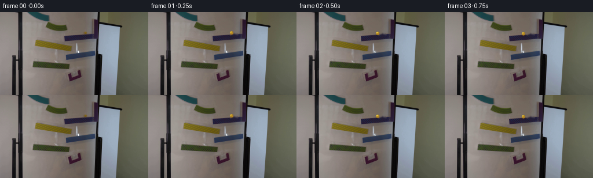
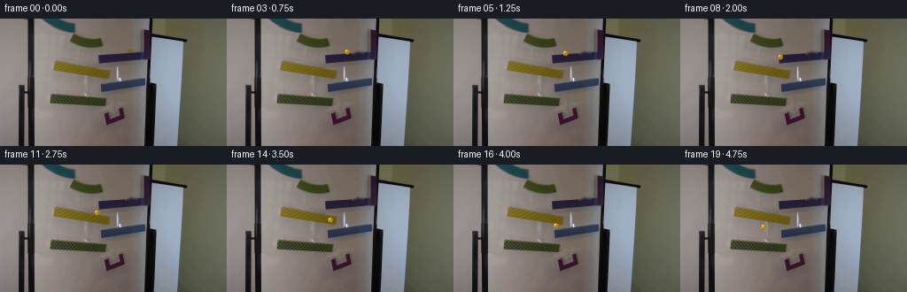
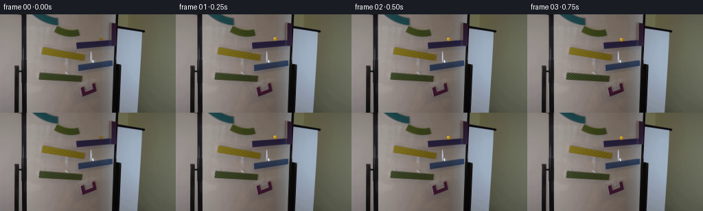

CODING AGENTS AS PIXEL WORLD MODELS
traex/DeepSeek-V4.1-Flash · 0106
点击播放 · 原生 RGB 像素
逐轮保存的候选
回放视频、检查图与代码变化。
每份候选均可单独播放。实际图片检查记录在下方工具轨迹中。
候选 01播放与检查图
点击播放 · 原生 RGB 像素


展开代码变化
--- 上一保存版本
+++ 本次保存版本
@@ -0,0 +1,198 @@
+from pathlib import Path
+
+import cv2
+import numpy as np
+from PIL import Image
+
+import artifact_io
+
+
+CASE_DIR = Path(__file__).resolve().parent
+WIDTH = 256
+HEIGHT = 144
+FRAMES = 20
+FPS = 4
+BALL_RADIUS = 3.15
+
+
+def clean_plate(image):
+ """Remove the original marble while preserving the surrounding ramp."""
+ mask = np.zeros((HEIGHT, WIDTH), np.uint8)
+ cv2.ellipse(mask, (148, 36), (6, 6), 0, 0, 360, 255, -1)
+ cv2.ellipse(mask, (148, 39), (7, 3), 0, 0, 360, 255, -1)
+ # OpenCV expects BGR for inpainting; convert back to RGB afterwards.
+ bgr = cv2.cvtColor(image, cv2.COLOR_RGB2BGR)
+ repaired = cv2.inpaint(bgr, mask, 3.0, cv2.INPAINT_TELEA)
+ repaired = cv2.cvtColor(repaired, cv2.COLOR_BGR2RGB)
+
+ # Feather the repair at its boundary so the static plate has no hard seam.
+ blurred_mask = cv2.GaussianBlur(mask.astype(np.float32) / 255.0, (0, 0), 0.8)
+ alpha = np.clip(blurred_mask[..., None] * 1.35, 0.0, 1.0)
+ return np.clip(
+ repaired.astype(np.float32) * alpha
+ + image.astype(np.float32) * (1.0 - alpha),
+ 0,
+ 255,
+ ).astype(np.uint8)
+
+
+def ball_track():
+ """A zig-zag descent across the three visible ramp levels."""
+ positions = np.array(
+ [
+ [147.5, 35.5],
+ [144.2, 36.1],
+ [140.4, 36.9],
+ [136.2, 37.7],
+ [131.6, 38.5],
+ [126.6, 39.3],
+ [121.5, 40.1],
+ [116.5, 41.1],
+ [112.5, 42.7],
+ [110.0, 46.5],
+ [108.3, 51.0],
+ [108.2, 55.0],
+ [111.0, 57.8],
+ [114.7, 59.9],
+ [118.2, 62.0],
+ [119.5, 66.2],
+ [118.0, 71.0],
+ [111.5, 71.2],
+ [102.8, 70.9],
+ [94.0, 70.6],
+ ],
+ dtype=np.float32,
+ )
+ # Smooth the sampled positions without pulling frame zero away from the
+ # original marble location.
+ smooth = positions.copy()
+ for _ in range(2):
+ smooth[1:-1] = 0.25 * smooth[:-2] + 0.50 * smooth[1:-1] + 0.25 * smooth[2:]
+ smooth[0] = positions[0]
+ return smooth
+
+
+def height_profile():
+ """Approximate clearance above the supporting ramp, for shadow falloff."""
+ h = np.zeros(FRAMES, np.float32)
+ h[8] = 0.15
+ h[9] = 0.75
+ h[10] = 1.0
+ h[11] = 0.10
+ h[15] = 0.20
+ h[16] = 0.65
+ h[17] = 0.05
+ return h
+
+
+def smoothstep(edge0, edge1, value):
+ t = np.clip((value - edge0) / (edge1 - edge0), 0.0, 1.0)
+ return t * t * (3.0 - 2.0 * t)
+
+
+def render_ball(frame, center, phase, clearance):
+ """Composite a small amber glass sphere and a soft contact shadow."""
+ scale = 7
+ pad = 8
+ cx, cy = float(center[0]), float(center[1])
+ x0 = max(0, int(np.floor(cx)) - pad)
+ y0 = max(0, int(np.floor(cy)) - pad)
+ x1 = min(WIDTH, int(np.ceil(cx)) + pad + 1)
+ y1 = min(HEIGHT, int(np.ceil(cy)) + pad + 1)
+ if x0 >= x1 or y0 >= y1:
+ return frame
+
+ patch = frame[y0:y1, x0:x1].astype(np.float32) / 255.0
+ ph = (y1 - y0) * scale
+ pw = (x1 - x0) * scale
+ yy, xx = np.mgrid[0:ph, 0:pw].astype(np.float32)
+ local_cx = (cx - x0) * scale
+ local_cy = (cy - y0) * scale
+ u = (xx + 0.5 - local_cx) / (BALL_RADIUS * scale)
+ v = (yy + 0.5 - local_cy) / (BALL_RADIUS * scale)
+ r2 = u * u + v * v
+ inside = r2 <= 1.0
+
+ # The shadow grows softer and farther away during the two short drops.
+ shadow_dx = 1.15 + 0.75 * clearance
+ shadow_dy = 1.55 + 1.8 * clearance
+ su = (xx + 0.5 - local_cx - shadow_dx * scale) / ((2.8 + clearance * 1.4) * scale)
+ sv = (yy + 0.5 - local_cy - shadow_dy * scale) / ((1.55 + clearance * 0.9) * scale)
+ shadow = np.exp(-2.2 * (su * su + sv * sv))
+ shadow *= 0.36 * (1.0 - 0.48 * clearance)
+
+ bg = np.asarray(
+ Image.fromarray(frame[y0:y1, x0:x1]).resize((pw, ph), Image.Resampling.BICUBIC),
+ dtype=np.float32,
+ ) / 255.0
+
+ z = np.sqrt(np.clip(1.0 - r2, 0.0, 1.0))
+ light = np.array([-0.42, -0.56, 0.72], dtype=np.float32)
+ light /= np.linalg.norm(light)
+ diffuse = np.clip(u * light[0] + v * light[1] + z * light[2], 0.0, 1.0)
+ fresnel = np.power(1.0 - z, 1.7)
+
+ # Amber glass body with a slowly turning internal striation.
+ swirl = np.sin(7.0 * u - 5.0 * v + phase) * np.sin(4.5 * u + 3.5 * v - 0.7 * phase)
+ amber = np.empty((ph, pw, 3), np.float32)
+ amber[..., 0] = 0.57 + 0.22 * diffuse + 0.075 * swirl
+ amber[..., 1] = 0.38 + 0.23 * diffuse + 0.050 * swirl
+ amber[..., 2] = 0.035 + 0.055 * diffuse + 0.012 * swirl
+ amber += (0.18 * fresnel)[..., None] * np.array([0.65, 0.45, 0.04], np.float32)
+
+ # Soft refraction of the board colors and two crisp glass highlights.
+ body = 0.86 * amber + 0.14 * (0.34 + 0.66 * bg)
+ h1 = np.exp(-((u + 0.36) ** 2 + (v + 0.48) ** 2) / 0.028)
+ h2 = np.exp(-((u - 0.30) ** 2 + (v - 0.36) ** 2) / 0.012)
+ body += (0.95 * h1 + 0.40 * h2)[..., None] * np.array([1.0, 0.88, 0.42], np.float32)
+ rim = np.clip((r2 - 0.68) / 0.32, 0.0, 1.0)
+ body *= (1.0 - 0.34 * rim[..., None])
+ body += (0.16 * fresnel)[..., None] * np.array([1.0, 0.68, 0.12], np.float32)
+
+ edge = smoothstep(1.06, 0.90, np.sqrt(r2))
+ alpha_ball = edge * np.clip(0.90 + 0.10 * z, 0.0, 1.0)
+
+ shadow_rgb = bg * (1.0 - 0.72 * shadow[..., None])
+ composed = bg * (1.0 - shadow[..., None]) + shadow_rgb * shadow[..., None]
+ composed = composed * (1.0 - alpha_ball[..., None]) + np.clip(body, 0.0, 1.0) * alpha_ball[..., None]
+
+ composed = np.clip(composed * 255.0 + 0.5, 0, 255).astype(np.uint8)
+ composed = np.asarray(
+ Image.fromarray(composed).resize((x1 - x0, y1 - y0), Image.Resampling.LANCZOS)
+ )
+ out = frame.copy()
+ out[y0:y1, x0:x1] = composed
+ return out
+
+
+def generate():
+ source = np.asarray(Image.open(CASE_DIR / "first_frame.png").convert("RGB"))
+ assert source.shape == (HEIGHT, WIDTH, 3)
+ background = clean_plate(source)
+ track = ball_track()
+ clearances = height_profile()
+
+ frames = []
+ for index in range(FRAMES):
+ if index == 0:
+ frames.append(source.copy())
+ continue
+ phase = 0.45 * index + 0.30 * np.sin(index * 0.8)
+ frames.append(
+ render_ball(
+ background.copy(),
+ track[index],
+ phase=float(phase),
+ clearance=float(clearances[index]),
+ )
+ )
+
+ frames = np.stack(frames).astype(np.uint8)
+ assert frames.shape == (FRAMES, HEIGHT, WIDTH, 3)
+ assert np.array_equal(frames[0], source)
+ artifact_io.save(frames, CASE_DIR)
+ return frames
+
+
+if __name__ == "__main__":
+ generate()
候选 02播放与检查图
点击播放 · 原生 RGB 像素

展开代码变化
--- 上一保存版本
+++ 本次保存版本
@@ -12,28 +12,36 @@
HEIGHT = 144
FRAMES = 20
FPS = 4
-BALL_RADIUS = 3.15
+BALL_RADIUS = 2.85
def clean_plate(image):
"""Remove the original marble while preserving the surrounding ramp."""
- mask = np.zeros((HEIGHT, WIDTH), np.uint8)
- cv2.ellipse(mask, (148, 36), (6, 6), 0, 0, 360, 255, -1)
- cv2.ellipse(mask, (148, 39), (7, 3), 0, 0, 360, 255, -1)
- # OpenCV expects BGR for inpainting; convert back to RGB afterwards.
- bgr = cv2.cvtColor(image, cv2.COLOR_RGB2BGR)
- repaired = cv2.inpaint(bgr, mask, 3.0, cv2.INPAINT_TELEA)
- repaired = cv2.cvtColor(repaired, cv2.COLOR_BGR2RGB)
+ result = image.astype(np.float32).copy()
+ yy, xx = np.mgrid[0:HEIGHT, 0:WIDTH]
+ distance = np.hypot((xx - 147.6) / 6.2, (yy - 36.2) / 5.0)
+ mask = distance <= 1.0
- # Feather the repair at its boundary so the static plate has no hard seam.
- blurred_mask = cv2.GaussianBlur(mask.astype(np.float32) / 255.0, (0, 0), 0.8)
- alpha = np.clip(blurred_mask[..., None] * 1.35, 0.0, 1.0)
- return np.clip(
- repaired.astype(np.float32) * alpha
- + image.astype(np.float32) * (1.0 - alpha),
- 0,
- 255,
- ).astype(np.uint8)
+ # The marble sits across a nearly horizontal material boundary. Horizontal
+ # interpolation reconstructs that boundary more faithfully than inpainting.
+ for y in range(31, 42):
+ xs = np.flatnonzero(mask[y])
+ if not len(xs):
+ continue
+ left = xs[0] - 1
+ right = xs[-1] + 1
+ left_rgb = image[y, max(0, left - 2):left + 1].mean(axis=0)
+ right_rgb = image[y, right:min(WIDTH, right + 3)].mean(axis=0)
+ for x in xs:
+ t = (x - left) / max(1, right - left)
+ result[y, x] = left_rgb * (1.0 - t) + right_rgb * t
+
+ # Reintroduce the board's fine grain, sampled from nearby rows.
+ noise = image.astype(np.float32) - cv2.GaussianBlur(image, (0, 0), 1.1)
+ result += noise * mask[..., None] * 0.55
+ feather = np.clip((1.05 - distance) / 0.20, 0.0, 1.0)[..., None]
+ result = image.astype(np.float32) * (1.0 - feather) + result * feather
+ return np.clip(result + 0.5, 0, 255).astype(np.uint8)
def ball_track():
@@ -41,47 +49,40 @@
positions = np.array(
[
[147.5, 35.5],
- [144.2, 36.1],
- [140.4, 36.9],
- [136.2, 37.7],
- [131.6, 38.5],
- [126.6, 39.3],
- [121.5, 40.1],
- [116.5, 41.1],
- [112.5, 42.7],
- [110.0, 46.5],
- [108.3, 51.0],
- [108.2, 55.0],
- [111.0, 57.8],
- [114.7, 59.9],
- [118.2, 62.0],
- [119.5, 66.2],
- [118.0, 71.0],
- [111.5, 71.2],
- [102.8, 70.9],
- [94.0, 70.6],
+ [144.9, 36.1],
+ [141.4, 36.7],
+ [137.4, 37.3],
+ [132.9, 38.0],
+ [128.0, 38.7],
+ [122.8, 39.4],
+ [118.0, 40.2],
+ [114.0, 41.2],
+ [110.1, 45.0],
+ [107.6, 50.4],
+ [108.0, 55.1],
+ [110.5, 58.0],
+ [114.0, 60.5],
+ [117.5, 62.8],
+ [121.0, 65.2],
+ [122.5, 68.4],
+ [120.5, 70.5],
+ [116.5, 72.0],
+ [113.5, 74.0],
],
dtype=np.float32,
)
- # Smooth the sampled positions without pulling frame zero away from the
- # original marble location.
- smooth = positions.copy()
- for _ in range(2):
- smooth[1:-1] = 0.25 * smooth[:-2] + 0.50 * smooth[1:-1] + 0.25 * smooth[2:]
- smooth[0] = positions[0]
- return smooth
+ return positions
def height_profile():
"""Approximate clearance above the supporting ramp, for shadow falloff."""
h = np.zeros(FRAMES, np.float32)
- h[8] = 0.15
- h[9] = 0.75
- h[10] = 1.0
- h[11] = 0.10
- h[15] = 0.20
- h[16] = 0.65
- h[17] = 0.05
+ h[8] = 0.10
+ h[9] = 0.70
+ h[10] = 0.35
+ h[15] = 0.08
+ h[16] = 0.55
+ h[17] = 0.08
return h
候选 03播放与检查图
候选 04播放与检查图
点击播放 · 原生 RGB 像素


展开代码变化
--- 上一保存版本
+++ 本次保存版本
@@ -49,25 +49,25 @@
positions = np.array(
[
[147.5, 35.5],
- [144.9, 36.1],
- [141.4, 36.7],
- [137.4, 37.3],
- [132.9, 38.0],
- [128.0, 38.7],
- [122.8, 39.4],
- [118.0, 40.2],
- [114.0, 41.2],
- [110.1, 45.0],
- [107.6, 50.4],
- [108.0, 55.1],
- [110.5, 58.0],
- [114.0, 60.5],
- [117.5, 62.8],
- [121.0, 65.2],
- [122.5, 68.4],
+ [147.0, 35.54],
+ [145.5, 35.64],
+ [142.9, 35.81],
+ [139.3, 36.05],
+ [134.5, 36.36],
+ [128.9, 36.73],
+ [122.1, 37.18],
+ [114.3, 37.56],
+ [110.0, 44.5],
+ [107.5, 51.5],
+ [108.3, 56.5],
+ [111.5, 58.5],
+ [116.0, 61.5],
+ [120.5, 64.5],
+ [122.5, 67.0],
[120.5, 70.5],
- [116.5, 72.0],
- [113.5, 74.0],
+ [117.0, 73.0],
+ [114.0, 76.0],
+ [110.0, 79.0],
],
dtype=np.float32,
)
候选 06播放与检查图
点击播放 · 原生 RGB 像素
展开代码变化
--- 上一保存版本
+++ 本次保存版本
@@ -65,9 +65,9 @@
[120.5, 64.5],
[122.5, 67.0],
[120.5, 70.5],
- [117.0, 73.0],
- [114.0, 76.0],
- [110.0, 79.0],
+ [117.0, 75.0],
+ [114.0, 79.5],
+ [110.0, 83.5],
],
dtype=np.float32,
)
候选 07播放与检查图
可观测工具轨迹
实际执行的命令与返回图片。
命令 1exit 0
/bin/bash -c "pwd && rg --files -g '"'!*.mp4'"' -g '"'!*.mov'"' | sed -n '1,200p'"
命令 2exit 0
/bin/bash -c "printf '%s\\n' '--- prompt.txt ---'; sed -n '1,240p' prompt.txt; printf '%s\\n' '--- GENERATION_RULES.md ---'; sed -n '1,320p' GENERATION_RULES.md"
命令 3exit 0
/bin/bash -c 'ls -la; file first_frame.png 2>/dev/null; identify first_frame.png 2>/dev/null || true; ffprobe -v error -show_streams -of json first_frame.png 2>/dev/null || true'
命令 4exit 0
/bin/bash -c "sed -n '1,260p' artifact_io.py"
命令 5exit 0
/bin/bash -c "sed -n '1,260p' player_template.html"
命令 6exit 0
/bin/bash -c "python - <<'PY'
from PIL import Image
import numpy as np
im=Image.open('first_frame.png').convert('RGB')
a=np.asarray(im)
print('size',im.size,'mode',im.mode,'dtype',a.dtype)
print('minmax',a.min(axis=(0,1)),a.max(axis=(0,1)))
print('mean/std',a.mean(axis=(0,1)),a.std(axis=(0,1)))
print('unique colors',len(np.unique(a.reshape(-1,3),axis=0)))
# top 30 colors
u,c=np.unique(a.reshape(-1,3),axis=0,return_counts=True)
for idx in np.argsort(c)[-30:][::-1]: print(tuple(u[idx]),int(c[idx]))
PY"命令 7exit 0
/bin/bash -c "python - <<'PY'
from PIL import Image
import numpy as np
im=np.asarray(Image.open('first_frame.png').convert('RGB')).astype(float)
R,G,B=im[:,:,0],im[:,:,1],im[:,:,2]
mx=im.max(2); mn=im.min(2); sat=(mx-mn)/(mx+1e-6)
# yellow-ish candidates
m=(R>100)&(G>70)&(R>B*1.35)&(G>B*1.15)&(sat>.25)
ys,xs=np.where(m)
print('yellow count',len(xs),'bbox',(xs.min(),ys.min(),xs.max(),ys.max()))
# components
from scipy import ndimage
lab,n=ndimage.label(m)
for i in range(1,n+1):
yy,xx=np.where(lab==i)
if len(xx)>=3:
print(i,len(xx),'bbox',xx.min(),yy.min(),xx.max(),yy.max(),'mean',im[yy,xx].mean(0).round(1))
# all high sat warm
for th in [.2,.3,.4,.5,.6]:
mm=(sat>th)&(R>G*1.05)&(G>B*1.2)
yy,xx=np.where(mm)
print('th',th,'count',len(xx),'bbox',None if not len(xx) else (xx.min(),yy.min(),xx.max(),yy.max()))
PY"命令 8exit 0
/bin/bash -c "python - <<'PY'
from PIL import Image
import numpy as np
im=np.asarray(Image.open('first_frame.png').convert('RGB'))
g=(.299*im[:,:,0]+.587*im[:,:,1]+.114*im[:,:,2])
chars=' .,:;irsXA253hMHGS#9B&@'
for y in range(0,144,2):
s=''
for x in range(0,256,2):
block=g[y:y+2,x:x+2].mean()
s+=chars[min(len(chars)-1,int(block/256*len(chars)))]
print(f'{y:03d} '+s)
PY"命令 9exit 0
/bin/bash -c "python - <<'PY'
from PIL import Image
import numpy as np
from scipy import ndimage
im=np.asarray(Image.open('first_frame.png').convert('RGB')).astype(float)
R,G,B=im[:,:,0],im[:,:,1],im[:,:,2]
# yellow target rough RGB around 150,120,30
# find connected area where R/B high and G/B high
score=(R-B)*0.7+(G-B)*0.4-(abs(R-G)*0.25)
mask=(score>45)&(R>65)&(B<90)
mask=ndimage.binary_opening(mask,iterations=1)
lab,n=ndimage.label(mask)
print('n',n)
for i in range(1,n+1):
yy,xx=np.where(lab==i)
if len(xx)>=8:
print(i,len(xx),'bbox',xx.min(),yy.min(),xx.max(),yy.max(),'centroid',xx.mean().round(2),yy.mean().round(2),'mean rgb',im[yy,xx].mean(0).round(1),'max',im[yy,xx].max(0))
# save crops and masks to tmp
Image.fromarray(im.astype(np.uint8)).crop((40,25,140,80)).resize((800,440)).save('.tmp/crop.png')
Image.fromarray((mask*255).astype(np.uint8)).save('.tmp/mask.png')
PY"命令 10exit 0
/bin/bash -c "python - <<'PY'
from PIL import Image
import numpy as np
from scipy import ndimage
im=np.asarray(Image.open('first_frame.png').convert('RGB')).astype(float)
# print grid values near marble. print each pixel rows 42-73 cols 54-130 as coarse labels
R,G,B=im[:,:,0],im[:,:,1],im[:,:,2]
score=(R-B)*0.7+(G-B)*0.4-(abs(R-G)*0.25)
m=(score>45)&(R>65)&(B<90)
ys,xs=np.where(m)
for y in range(44,70):
s=''
for x in range(55,130):
if m[y,x]: ch='#'
else:
v=im[y,x].mean()
ch=' ' if v<30 else '.' if v<60 else ':' if v<90 else '+' if v<120 else '*' if v<150 else 'O' if v<190 else 'W'
s+=ch
print(f'{y:03d} {s}')
# row colors at 65
for y in [47,48,49,55,58,60,65,67,68]:
print('y',y)
for x in range(58,128,4): print(x,tuple(im[y,x].astype(int)),end='; ')
print()
PY"命令 11exit 0
/bin/bash -c "python - <<'PY'
from PIL import Image
import numpy as np
from sklearn.cluster import KMeans
im=np.asarray(Image.open('first_frame.png').convert('RGB'))
a=im.reshape(-1,3)
for k in [6,10,16,24]:
km=KMeans(k,random_state=2,n_init=4).fit(a[::3])
centers=km.cluster_centers_.round().astype(int)
counts=np.bincount(km.labels_,minlength=k)*3
print('\\nk=',k)
for i in np.argsort(counts)[::-1]: print(i, counts[i], tuple(centers[i]))
PY"命令 12exit 0
/bin/bash -c "python - <<'PY'
from PIL import Image
import numpy as np
im=np.asarray(Image.open('first_frame.png').convert('RGB')).astype(float)
R,G,B=im[:,:,0],im[:,:,1],im[:,:,2]
# construct boundaries based on known yellow mask, output yellow mask min/max x each row
score=(R-B)*0.7+(G-B)*0.4-(abs(R-G)*0.25)
m=(score>45)&(R>65)&(B<90)
for y in range(44,71):
xs=np.flatnonzero(m[y])
if len(xs):
# intervals
cuts=np.flatnonzero(np.diff(xs)>1)
starts=np.r_[xs[0],xs[cuts+1]]; ends=np.r_[xs[cuts],xs[-1]]
print(y,list(zip(starts.tolist(),ends.tolist())))
# color patches in suspected ramp regions
for name,box in [('left',(8,0,100,50)),('right',(100,0,256,80)),('lower',(0,80,256,144)),('mid',(70,20,200,100))]:
x0,y0,x1,y1=box
print(name,im[y0:y1,x0:x1].reshape(-1,3).mean(0).round(1),np.median(im[y0:y1,x0:x1].reshape(-1,3),axis=0))
PY"命令 13exit 0
/bin/bash -c "python - <<'PY'
from PIL import Image
import numpy as np
im=np.asarray(Image.open('first_frame.png').convert('RGB'))
# row transitions colors x=45..180 by sampling x every 2
for y in [0,8,16,24,32,40,48,56,64,72,80,88,96,104,112,120,128,136,143]:
print('\\ny',y)
# segments where color close
a=im[y]
# quantize coarse and runs
q=(a//16)
runs=[]; st=0
for x in range(1,256):
if np.any(q[x]"'!=q[st]) and x-st>=4:
runs.append((st,x-1,tuple(a[(st+x-1)//2])))
st=x
elif np.any(q[x]!=q[st]):
# allow slight, but close current run if too long
if x-st>=7:
runs.append((st,x-1,tuple(a[(st+x-1)//2]))); st=x
if 256-st>=4:runs.append((st,255,tuple(a[(st+255)//2])))
print(runs[:40])
PY'命令 14exit 0
/bin/bash -c "python - <<'PY'
from PIL import Image
import numpy as np
from scipy import ndimage
im=np.asarray(Image.open('first_frame.png').convert('RGB')).astype(float)
h,w=im.shape[:2]
R,G,B=im[:,:,0],im[:,:,1],im[:,:,2]
mx=im.max(2); mn=im.min(2); d=mx-mn
sat=np.where(mx>0,d/mx,0)
# classify broad palette based on hue/value
# labels: dark K, white W, neutral gray g, warm yellow Y, orange O, blue B, green G, purple P
lab=np.full((h,w),'.',dtype='<U1')
for y in range(h):
for x in range(w):
r,g,b=im[y,x]; v=max(r,g,b); s=(v-min(r,g,b))/(v+1e-6)
if v<35: c='K'
elif v<70: c='k'
elif s<0.08: c='W' if v>180 else 'w' if v>125 else 'g'
elif r>g*1.15 and g>b*1.25: c='Y' if g>b*1.8 else 'O'
elif g>r*1.1 and g>b*1.2: c='G'
elif b>r*1.08 and b>g*1.03: c='B'
elif r>b*1.15 and b>g*0.9: c='P'
elif r>g*1.05 and g>b*1.1: c='y'
else: c='n'
lab[y,x]=c
# downsample blocks 2x2 by mode (or priority)
chars=''
for y in range(0,h,2):
s=''
for x in range(0,w,2):
block=lab[y:y+2,x:x+2].ravel()
# priority saturated/dark then most common
pri={'K':0,'Y':1,'O':1,'B':2,'G':2,'P':2,'k':3,'w':4,'g':4,'y':1,'n':5,'W':6,'.':6}
c=sorted(block,key=lambda z:pri.get(z,5))[0]
s+=c
print(f'{y:03d} '+s)
# sample region around candidate marble
print('\\nCandidate marble RGB patches:')
for y in range(30,42):
print(' '.join(f'{tuple(im[y,x].astype(int))}' for x in range(140,155)))
PY"命令 15exit 0
/bin/bash -c "python - <<'PY'
import cv2, numpy as np
im=cv2.imread('first_frame.png')
g=cv2.cvtColor(im,cv2.COLOR_BGR2GRAY)
g=cv2.GaussianBlur(g,(3,3),0)
e=cv2.Canny(g,35,90)
cv2.imwrite('.tmp/edges.png',e)
lines=cv2.HoughLinesP(e,1,np.pi/180,threshold=18,minLineLength=10,maxLineGap=3)
print('lines',None if lines is None else len(lines))
if lines is not None:
for l in sorted(lines[:,0].tolist(), key=lambda z:-np.hypot(z[2]-z[0],z[3]-z[1]))[:120]:
x1,y1,x2,y2=l
print(l,'len',round(np.hypot(x2-x1,y2-y1),1),'angle',round(np.degrees(np.arctan2(y2-y1,x2-x1)),1))
PY"命令 16exit 0
/bin/bash -c "python - <<'PY'
from PIL import Image
import numpy as np
im=np.asarray(Image.open('first_frame.png').convert('RGB'))
# render crops via ANSI truecolor half blocks in terminal (two vertical px per cell), x 0..256 full, crops 40x70
# Color ANSI approximate
for y0,y1,x0,x1 in [(30,74,40,140),(38,112,60,170),(80,144,90,180),(0,60,145,220)]:
print(f'CROP x{x0}:{x1} y{y0}:{y1}')
for y in range(y0,y1,2):
s=''
for x in range(x0,x1):
r,g,b=im[y,x]
s+=f'\\x1b[38;2;{r};{g};{b}m\\u2580'
print(s+'\\x1b[0m')
PY"命令 17exit 1
/bin/bash -c "python - <<'PY'
from PIL import Image
import numpy as np
im=np.asarray(Image.open('first_frame.png').convert('RGB')).astype(float)
# print grayscale structural, but make colored regions recognizable via chars
for y in range(0,144,2):
s=''
for x in range(0,256,2):
r,g,b=im[y:y+2,x:x+2].mean(0)
if r>g*1.35 and g>b*1.3: c='Y'
elif b>r*1.15 and b>g*1.05: c='B'
elif r>g*1.15 and b>g*1.05: c='P'
elif g>r*1.05 and g>b*1.15: c='G'
else:
v=.299*r+.587*g+.114*b
c='@' if v>210 else '#' if v>170 else '*' if v>140 else '+' if v>110 else ':' if v>80 else '.' if v>50 else ' '
s+=c
print(f'{y:03d} {s}')
PY"命令 18exit 0
/bin/bash -c "python - <<'PY'
from PIL import Image
import numpy as np
im=np.asarray(Image.open('first_frame.png').convert('RGB')).astype(float)
for y in range(0,144,2):
s=''
for x in range(0,256,2):
r,g,b=im[y:y+2,x:x+2].mean(axis=(0,1))
if r>g*1.35 and g>b*1.3: c='Y'
elif b>r*1.15 and b>g*1.05: c='B'
elif r>g*1.15 and b>g*1.05: c='P'
elif g>r*1.05 and g>b*1.15: c='G'
else:
v=.299*r+.587*g+.114*b
c='@' if v>210 else '#' if v>170 else '*' if v>140 else '+' if v>110 else ':' if v>80 else '.' if v>50 else ' '
s+=c
print(f'{y:03d} {s}')
PY"命令 19exit 0
/bin/bash -c "python - <<'PY'
from PIL import Image
import numpy as np
from scipy import ndimage
im=np.asarray(Image.open('first_frame.png').convert('RGB')).astype(float)
R,G,B=im[:,:,0],im[:,:,1],im[:,:,2]
# Map white-ish regions, contiguous components, print bboxes
m=(R>135)&(G>130)&(B>120)&(np.abs(R-G)<28)&(np.abs(G-B)<30)
# actually board/ramp, all light
lab,n=ndimage.label(m)
print('light components')
for i in range(1,n+1):
yy,xx=np.where(lab==i)
if len(xx)>30:
print(len(xx),(xx.min(),yy.min(),xx.max(),yy.max()),'cent',xx.mean().round(1),yy.mean().round(1),'mean',im[yy,xx].mean(0).round(1))
# line-wise from x=100 onward, find where blue starts
print('blue row ranges')
mb=(B>R*1.2)&(B>G*1.1)&(B>80)
for y in range(0,144,4):
xs=np.flatnonzero(mb[y])
if len(xs):
print(y,xs.min(),xs.max(),len(xs))
PY"命令 20exit 0
/bin/bash -c "python - <<'PY'
from PIL import Image
import numpy as np
im=np.asarray(Image.open('first_frame.png').convert('RGB')).astype(float)
# infer specific object edges by adjacent mean differences; print strongest edge positions for each row
for y in [22,24,28,32,36,40,44,48,52,56,60,64,68,72,76,80,84,88,92,96,100,104,108,112,116,120,124,128,132,136,140,143]:
a=im[y]
d=np.abs(np.diff(a,axis=0)).mean(1)
ix=np.argsort(d)[-12:][::-1]
print('y',y,[(int(x),round(float(d[x]),1)) for x in ix])
PY"命令 21exit 0
/bin/bash -c "python - <<'PY'
import cv2, numpy as np
im=cv2.imread('first_frame.png')
g=cv2.cvtColor(im,cv2.COLOR_BGR2GRAY)
e=cv2.Canny(cv2.GaussianBlur(g,(3,3),0),30,80)
# thin ASCII 1 char per pixel, downsample x2 y2 with max
for y in range(0,144,2):
s=''
for x in range(0,256,2):
v=e[y:y+2,x:x+2].max()
s+='#' if v else ' '
print(f'{y:03d} {s}')
PY"命令 22exit 0
/bin/bash -c "python - <<'PY'
from PIL import Image
import numpy as np
im=np.asarray(Image.open('first_frame.png').convert('RGB'))
# inspect marble region mean/highlights and candidate background surrounding; output 24x24 numeric grayscale and RGB diff metrics
for box in [(140,29,156,45),(55,44,128,72)]:
x0,y0,x1,y1=box; a=im[y0:y1,x0:x1]
print('box',box)
# print saturation map
for y in range(a.shape[0]):
s=''
for x in range(a.shape[1]):
r,g,b=a[y,x]; mx=max(r,g,b); mn=min(r,g,b); sat=(mx-mn)/(mx+1e-9)
s+='Y' if (r>g*1.2 and g>b*1.3 and sat>.35) else '#' if mx>180 else '+' if mx>140 else '.' if mx>90 else ' '
print(s)
PY"命令 23exit 0
/bin/bash -c "python - <<'PY'
from PIL import Image
import numpy as np
im=np.asarray(Image.open('first_frame.png').convert('RGB')).astype(float)
# list likely ramp polygon corners from edge map manually inferred, then sample mean colors around
# Compute Canny segment endpoints via cv2 LSD maybe
import cv2
g=cv2.cvtColor(im.astype(np.uint8),cv2.COLOR_RGB2GRAY)
lsd=cv2.createLineSegmentDetector(cv2.LSD_REFINE_STD)
lines,widths,prec,nfa=lsd.detect(g)
ls=lines[:,0] if lines is not None else []
print('lsd',len(ls))
for l in sorted(ls,key=lambda z:-np.hypot(*(z[2:]-z[:2])))[:100]:
x1,y1,x2,y2=l
print([round(float(x),1) for x in l],'len',round(float(np.hypot(*(l[2:]-l[:2]))),1))
PY"命令 24exit 1
/bin/bash -c "python - <<'PY'
from PIL import Image
import numpy as np
im=np.asarray(Image.open('first_frame.png').convert('RGB'))
# sample mean in polygon ramp surfaces and lines
polys={
'ramp1':[(64,47),(124,59),(122,68),(61,58)],
'ramp2':[(61,58),(121,68),(119,82),(59,85)],
'ramp3':[(59,85),(119,90),(117,98),(57,95)],
'ramp4':[(114,74),(163,66),(164,75),(116,82)],
'ramp5':[(113,41),(157,38),(166,45),(165,50)],
'blue':[(172,22),(205,29),(202,120),(177,121),(170,70)],
'leftwall':[(31,0),(38,0),(38,143),(31,143)],
'leftboard':[(39,0),(90,0),(92,143),(39,143)],
}
for k,p in polys.items():
mask=np.zeros(im.shape[:2],bool)
# use cv2
import cv2
cv2.fillPoly(mask,[np.array(p,np.int32)],1)
a=im[mask]
print(k,len(a),'mean',a.mean(0).round(1),'median',np.median(a,0).round(1),'std',a.std(0).round(1))
PY"命令 25exit 0
/bin/bash -c "python - <<'PY'
from PIL import Image
import numpy as np, cv2
im=np.asarray(Image.open('first_frame.png').convert('RGB'))
polys={
'ramp1':[(64,47),(124,59),(122,68),(61,58)],
'ramp2':[(61,58),(121,68),(119,82),(59,85)],
'ramp3':[(59,85),(119,90),(117,98),(57,95)],
'ramp4':[(114,74),(163,66),(164,75),(116,82)],
'ramp5':[(113,41),(157,38),(166,45),(165,50)],
'blue':[(172,22),(205,29),(202,120),(177,121),(170,70)],
'leftwall':[(31,0),(38,0),(38,143),(31,143)],
'leftboard':[(39,0),(90,0),(92,143),(39,143)],
}
for k,p in polys.items():
mask=np.zeros(im.shape[:2],np.uint8)
cv2.fillPoly(mask,[np.array(p,np.int32)],1)
a=im[mask.astype(bool)]
print(k,len(a),'mean',a.mean(0).round(1),'median',np.median(a,0).round(1),'std',a.std(0).round(1))
PY"命令 26exit 0
/bin/bash -c "python - <<'PY'
from PIL import Image
import numpy as np
im=np.asarray(Image.open('first_frame.png').convert('RGB'))
for y in range(29,43):
print(y, ' '.join(f'{x}:{im[y,x,0]:03d},{im[y,x,1]:03d},{im[y,x,2]:03d}' for x in range(140,157)))
PY"命令 27exit 0
/bin/bash -c "python - <<'PY'
from PIL import Image
import numpy as np
im=np.asarray(Image.open('first_frame.png').convert('RGB'))
# print all coordinate pixels where yellow condition in first component 146..149 34..37; context bbox
R,G,B=im[:,:,0],im[:,:,1],im[:,:,2]
m=(R>90)&(G>75)&(B<85)&(R>B*1.25)&(G>B*1.15)
for y in range(0,50):
xs=np.flatnonzero(m[y])
if len(xs):
print(y,[(int(x),tuple(im[y,x])) for x in xs])
PY"命令 28exit 0
/bin/bash -c "python generate.py && python - <<'PY'
from PIL import Image
import numpy as np
from pathlib import Path
src=np.asarray(Image.open('first_frame.png').convert('RGB'))
frames=np.stack([np.asarray(Image.open(p).convert('RGB')) for p in sorted(Path('frames').glob('*.png'))])
print('frames',frames.shape,frames.dtype)
print('frame0 identical',np.array_equal(frames[0],src),'maxdiff',np.abs(frames[0].astype(int)-src.astype(int)).max())
print('changed pixels per frame',[(i,int(np.any(frames[i]"'!=frames[0],axis=2).sum())) for i in range(20)])
print('"'mean abs frame diffs',[round(float(np.abs(frames[i].astype(float)-frames[i-1].astype(float)).mean()),3) for i in range(1,20)])
print('artifacts',[(p.name,p.stat().st_size) for p in [Path('pixels.npz'),Path('index.html'),Path('inspection.png'),Path('transition_check.png')]])
PY"命令 29exit 0
/bin/bash -c "python - <<'PY'
from PIL import Image
import numpy as np
# print small crops as luminance+chroma glyph maps, using nearest frame position from generate.py
import importlib.util
spec=importlib.util.spec_from_file_location('g','generate.py'); g=importlib.util.module_from_spec(spec); spec.loader.exec_module(g)
track=g.ball_track()
for i in [0,1,5,9,10,12,15,16,19]:
im=np.asarray(Image.open(f'frames/{i:02d}.png').convert('RGB')).astype(float)
cx,cy=track[i]; x0=int(round(cx))-8;y0=int(round(cy))-8
print(f'\\nframe {i:02d} center=({cx:.1f},{cy:.1f}) crop x{x0} y{y0}')
for y in range(y0,y0+17):
s=''
for x in range(x0,x0+17):
r,gg,b=im[y,x]; v=.299*r+.587*gg+.114*b
if r>gg*1.35 and gg>b*1.3: c='Y'
elif v>190:c='@'
elif v>160:c='#'
elif v>135:c='*'
elif v>110:c='+'
elif v>85:c=':'
elif v>60:c='.'
else:c=' '
s+=c
print(s)
PY"命令 30exit 0
/bin/bash -c "python - <<'PY'
from PIL import Image
import numpy as np
# Compare clean plate background region to original near marble; print source pixel matrix and plate output around repair.
s=np.asarray(Image.open('first_frame.png').convert('RGB'))
import importlib.util
spec=importlib.util.spec_from_file_location('g','generate.py'); g=importlib.util.module_from_spec(spec); spec.loader.exec_module(g)
b=g.clean_plate(s)
for y in range(29,43):
print(y,'src',' '.join(f'{s[y,x,0]:3d},{s[y,x,1]:3d},{s[y,x,2]:3d}' for x in range(142,154)))
print(y,'cln',' '.join(f'{b[y,x,0]:3d},{b[y,x,1]:3d},{b[y,x,2]:3d}' for x in range(142,154)))
PY"命令 31exit 0
/bin/bash -c "python generate.py && python - <<'PY'
from PIL import Image
import numpy as np
from pathlib import Path
src=np.asarray(Image.open('first_frame.png').convert('RGB'))
frames=np.stack([np.asarray(Image.open(p).convert('RGB')) for p in sorted(Path('frames').glob('*.png'))])
print('shape',frames.shape,'frame0',np.array_equal(frames[0],src))
print('changed pixels',[int(np.any(f"'!=frames[0],axis=2).sum()) for f in frames])
print('"'step means',[round(float(np.abs(frames[i].astype(float)-frames[i-1].astype(float)).mean()),3) for i in range(1,20)])
# candidate artifacts and first-frame plate residual quality
print('saved',Path('pixels.npz').stat().st_size,Path('index.html').stat().st_size)
PY"命令 32exit 0
/bin/bash -c "python generate.py && python - <<'PY'
from PIL import Image
import numpy as np
from pathlib import Path
src=np.asarray(Image.open('first_frame.png').convert('RGB'))
frames=np.stack([np.asarray(Image.open(p).convert('RGB')) for p in sorted(Path('frames').glob('*.png'))])
assert frames.shape==(20,144,256,3) and frames.dtype==np.uint8
assert np.array_equal(frames[0],src)
# Validate artifacts and that every frame has content.
print('frame0_identical',True)
print('changed_pixels',[int(np.any(f"'!=frames[0],axis=2).sum()) for f in frames])
print('"'nonblank',[(int(f.min()),int(f.max()),round(float(f.mean()),2)) for f in frames[::5]])
print('files',[(p,Path(p).exists(),Path(p).stat().st_size) for p in ['pixels.npz','frames/00.png','frames/19.png','index.html','inspection.png','transition_check.png']])
PY"命令 33exit 0
/bin/bash -c "python - <<'PY'
from PIL import Image
import numpy as np, importlib.util
spec=importlib.util.spec_from_file_location('g','generate.py'); g=importlib.util.module_from_spec(spec); spec.loader.exec_module(g)
t=g.ball_track()
for i in [0,1,4,8,9,10,11,15,16,19]:
im=np.asarray(Image.open(f'frames/{i:02d}.png').convert('RGB')).astype(float)
cx,cy=t[i]; x0=int(round(cx))-7;y0=int(round(cy))-7
print(f'\\nframe {i:02d} ({cx:.1f},{cy:.1f})')
for y in range(max(0,y0),min(144,y0+15)):
s=''
for x in range(max(0,x0),min(256,x0+15)):
r,gg,b=im[y,x]; v=.299*r+.587*gg+.114*b
if r>gg*1.35 and gg>b*1.3:c='Y'
elif v>190:c='@'
elif v>160:c='#'
elif v>135:c='*'
elif v>110:c='+'
elif v>85:c=':'
elif v>60:c='.'
else:c=' '
s+=c
print(s)
PY"命令 34exit 1
/bin/bash -c "python generate.py && python - <<'PY'
from pathlib import Path
import json
import numpy as np
from PIL import Image
src=np.asarray(Image.open('first_frame.png').convert('RGB'))
paths=sorted(Path('frames').glob('*.png'))
frames=np.stack([np.asarray(Image.open(p).convert('RGB')) for p in paths])
assert len(paths)==20
assert frames.shape==(20,144,256,3) and frames.dtype==np.uint8
assert np.array_equal(frames[0],src)
assert all(np.any(f"'!=frames[0]) for f in frames[1:])
with np.load('"'pixels.npz') as z:
packed=z['pixels']
assert packed.shape==(144,256,20)
decoded=np.stack([((packed[:,:,i]>>16)&255, (packed[:,:,i]>>8)&255, packed[:,:,i]&255) for i in range(20)],axis=-1).transpose(2,0,1,3)
assert np.array_equal(decoded,frames)
html=Path('index.html').read_text()
assert '__DATA__' not in html and '__ID__' not in html and 'window.__pixelReady=true' in html
print('validation_ok')
print('frames',len(paths),'fps',4,'duration_s',len(paths)/4,'size',frames.shape[2],frames.shape[1])
print('frame0_identical',True)
print('frame_bytes',min(p.stat().st_size for p in paths),max(p.stat().st_size for p in paths))
print('artifacts',[(p,Path(p).stat().st_size) for p in ['generate.py','pixels.npz','index.html','inspection.png','transition_check.png']])
PY"命令 35exit 0
/bin/bash -c "python - <<'PY'
from pathlib import Path
import numpy as np
from PIL import Image
src=np.asarray(Image.open('first_frame.png').convert('RGB'))
paths=sorted(Path('frames').glob('*.png'))
frames=np.stack([np.asarray(Image.open(p).convert('RGB')) for p in paths])
assert len(paths)==20
assert frames.shape==(20,144,256,3) and frames.dtype==np.uint8
assert np.array_equal(frames[0],src)
assert all(np.any(f"'!=frames[0]) for f in frames[1:])
with np.load('"'pixels.npz') as z:
packed=z['pixels']
assert packed.shape==(144,256,20)
expected=((frames[:,:,:,0].astype(np.uint32)<<16)|(frames[:,:,:,1].astype(np.uint32)<<8)|frames[:,:,:,2]).transpose(1,2,0)
assert np.array_equal(packed,expected)
html=Path('index.html').read_text()
assert '__DATA__' not in html and '__ID__' not in html and 'window.__pixelReady=true' in html
print('validation_ok')
print('frames',len(paths),'fps',4,'duration_s',len(paths)/4,'size',frames.shape[2],frames.shape[1])
print('frame0_identical',True)
print('frame_bytes',min(p.stat().st_size for p in paths),max(p.stat().st_size for p in paths))
print('artifacts',[(p,Path(p).stat().st_size) for p in ['generate.py','pixels.npz','index.html','inspection.png','transition_check.png']])
PY"命令 36exit 0
/bin/bash -c "python - <<'PY'
from PIL import Image
import numpy as np
from pathlib import Path
src=np.asarray(Image.open('first_frame.png').convert('RGB')).astype(np.int16)
frames=np.stack([np.asarray(Image.open(p).convert('RGB')).astype(np.int16) for p in sorted(Path('frames').glob('*.png'))])
# Report bounding boxes of changed pixels and motion step metrics.
for i in range(1,20):
m=np.any(frames[i]"'!=frames[0],axis=2)
yy,xx=np.where(m)
d=np.abs(frames[i]-frames[i-1]).mean()
print(f'"'{i:02d} bbox=({xx.min()},{yy.min()})-({xx.max()},{yy.max()}) changed={len(xx)} step={d:.3f}')
PY"保存候选 7 份；完成命令 36 次；可验证图片返回 0 张。原始 API 响应与完整日志保留在本地。